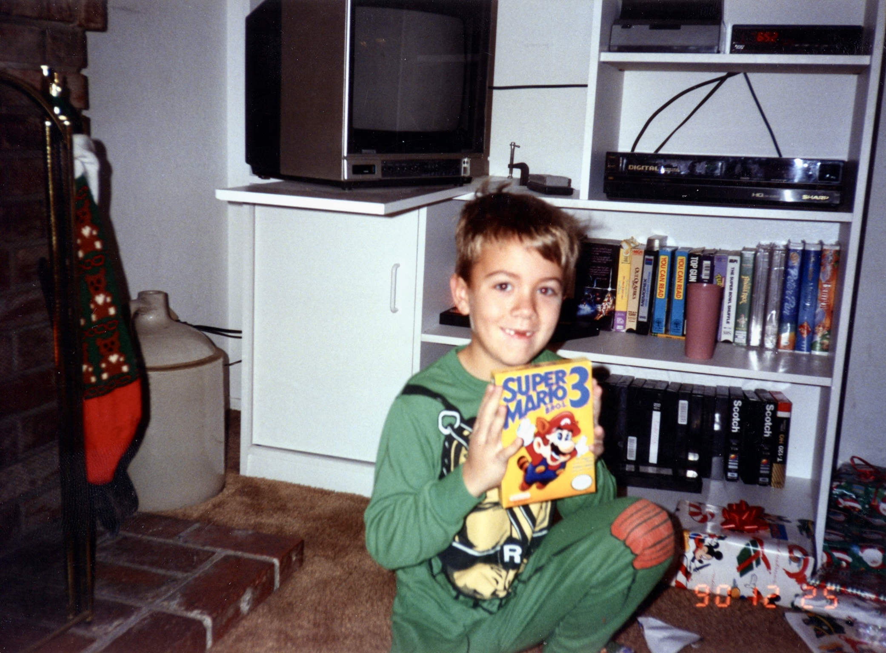

The Background
In 2019 my mother was given most of the photographs my Grandpa had taken. These all existed on slides. I purchased a high end slide and photo scanner with plans to digitize them at some point in the future.
Just some of the slides.
In 2019 my mother was given most of the photographs my Grandpa had taken. These all existed on slides. I purchased a high end slide and photo scanner with plans to digitize them at some point in the future.
Just some of the slides.
My Grandpa loved to take pictures. He loved to show them off even more. There are numerous stories of him dragging out his carousel slide projector and boring the heck out of anyone present before he passed in 2001.
Trying to teach me pool.
The assignment wants us to change one paragraph to green. That is pretty annoying, but here it is.
In 2020 something happened and I had more free time than I knew what to do with. I was able to scan all of my Grandpa's slides pretty quickly, and turned my focus onto the family photo albums.

Just a few of many.
In total I scanned just over 10,000 slides and photos. The image below also includes the colorspace correction files for some of the scans. There are backups in numerous places around the world but only really shared on numerous iCloud albums. Ultimately I would like a private website place where my family can add tags and help to organize this huge mess of photos, but that is beyond the scope of this assignment, and my skills. Adding some automated AI upscaling and dust & scratch removal would be pretty rad as well.
That's a lot of photos.
It doesn't feel appropriate to share the photos of the anyone but myself for this assignment, so here are a few me getting video games for birthdays and Christmas.
Check out that tube TV!
I remeber this game being weird as heck. From the fandom wiki
...the player takes the role of Commander Boston Low, part of a five-man team to plant explosives on an asteroid to avert its collision course with Earth. Discovering the asteroid is hollow, Low and two of his team are suddenly transported to a strange alien world, in a long-abandoned complex exhibiting advanced technology. Low and his companions must undertake xenoarchaeology to learn how the technology works, the fate of the alien race that built it, and other mysteries to find a way to return home.
It's for sale on Steam!